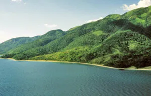

Descripcion del pais
Tanzania es un país situado en África Oriental, conocido por su abundante vida silvestre, sus paisajes naturales impresionantes y su rica diversidad cultural. Su capital oficial es Dodoma, aunque Dar es Salaam sigue siendo la ciudad más grande y el principal centro económico. Tanzania limita con países como Kenia, Uganda, Ruanda, Burundi, la República Democrática del Congo, Zambia, Malaui y Mozambique, y tiene una extensa costa en el océano Índico. El país es famoso por albergar el monte Kilimanjaro, la montaña más alta de África, y el Parque Nacional del Serengeti, hogar de la gran migración anual de ñus y otros animales. Swahili e inglés son los idiomas oficiales de Tanzania, reflejando su historia como parte de la África Oriental británica. Tanzania es también el hogar de la histórica ciudad de Zanzíbar, un destino popular por sus playas y su rica historia.
5 lugares para ir de vacaciones
1. Parque Nacional del Serengeti
El Parque Nacional del Serengeti es uno de los destinos de safari más famosos del mundo. Es conocido por su abundante vida silvestre y por ser el escenario de la Gran Migración, donde millones de ñus, cebras y antílopes se desplazan en busca de pastos frescos. Los visitantes pueden disfrutar de safaris guiados en vehículos o incluso en globos aerostáticos para observar leones, elefantes, jirafas, y muchos otros animales en su hábitat natural.
2. Zanzíbar
Zanzíbar es un archipiélago frente a la costa de Tanzania, conocido por sus hermosas playas de arena blanca y aguas turquesas. Es un destino ideal para relajarse, practicar buceo o snorkel en sus arrecifes de coral, y explorar la rica historia de Stone Town, un sitio declarado Patrimonio de la Humanidad por la UNESCO. Zanzíbar también es famosa por su producción de especias, especialmente clavo, y ofrece una mezcla única de influencias árabes, persas y europeas en su arquitectura y cultura.
3. Monte Kilimanjaro

El Monte Kilimanjaro, la montaña más alta de África, es un desafío emocionante para los montañistas y aventureros. Hay varias rutas para ascender, cada una ofreciendo diferentes paisajes, desde selvas tropicales hasta tundras alpinas. La cumbre, conocida como Uhuru Peak, ofrece vistas impresionantes que recompensan el esfuerzo de la escalada. A pesar de su altura, el Kilimanjaro es accesible para personas con buena condición física y es uno de los destinos más populares para el trekking en el mundo.
4. Parque Nacional de Ngorongoro
El Área de Conservación de Ngorongoro es una maravilla natural, hogar del cráter de Ngorongoro, la caldera volcánica intacta más grande del mundo. Dentro de este cráter, los visitantes pueden encontrar una gran diversidad de fauna, incluyendo leones, rinocerontes negros, búfalos y flamencos. Ngorongoro también es un sitio importante para la investigación arqueológica, con hallazgos en la Garganta de Olduvai que han proporcionado información clave sobre la evolución humana.
5. Lago Tanganica
El Lago Tanganica es uno de los lagos más grandes y profundos del mundo, compartido por Tanzania, Burundi, Zambia y la República Democrática del Congo. Este lago es famoso por su biodiversidad acuática, particularmente por la variedad de peces cíclidos que no se encuentran en ningún otro lugar del planeta. Las actividades en el lago incluyen paseos en barco, natación, y buceo, donde se pueden explorar las aguas cristalinas y la vida marina única.
Datos curiosos
1. El Monte Kilimanjaro
Tanzania alberga el Monte Kilimanjaro, la montaña más alta de África y una de las siete cumbres más altas del mundo. Esta montaña, que es un volcán inactivo con tres picos, atrae a miles de escaladores y excursionistas cada año. A pesar de su proximidad al ecuador, el Kilimanjaro está cubierto de nieve durante todo el año.
2. La Gran Migración
Tanzania es famosa por la Gran Migración, un fenómeno natural donde millones de ñus, cebras y otros animales migran a través del Parque Nacional del Serengeti hacia las llanuras del Maasai Mara en Kenia. Es uno de los espectáculos de vida silvestre más impresionantes del mundo, atrayendo a turistas de todo el planeta.
3. Diversidad Lingüística
Aunque el swahili y el inglés son los idiomas oficiales, Tanzania es un país muy diverso lingüísticamente. Se hablan más de 120 idiomas en todo el país, reflejando la rica variedad de grupos étnicos y culturas. Swahili es la lengua franca y es utilizada en todo el país para la comunicación interétnica.
Quiz
¡Prueba tus conocimientos con este Quiz!
Gracias por participar
Tu puntaje fue: